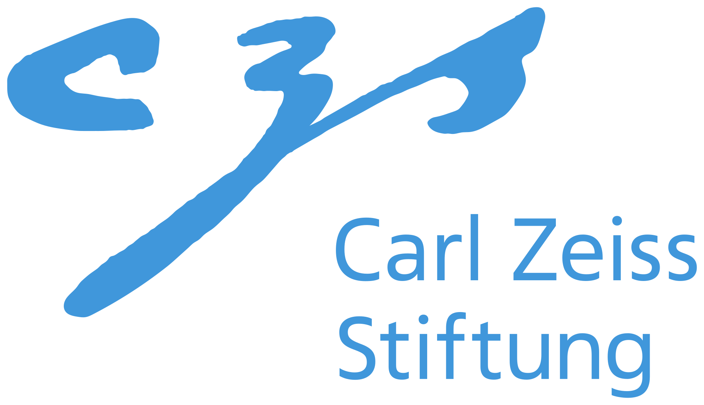

Results
Qualitative Results
Acknowledgments


This work was supported by the German Federal Ministry of Education and Research (BMBF): Tübingen AI Center, FKZ: 01IS18039A. This work is funded by the Deutsche Forschungsgemeinschaft (DFG, German Research Foundation) – 409792180 (Emmy Noether Programme, project: Real Virtual Humans). GPM is a member of the Machine Learning Cluster of Excellence, EXC number 2064/1 –Project number 390727645. The project was made possible by funding from the Carl Zeiss Foundation
BibTeX
@article{sarandi2024nlf,
title = {Neural Localizer Fields for Continuous 3D Human Pose and Shape Estimation},
author = {S\'ar\'andi, Istv\'an and Pons-Moll, Gerard},
booktitle = {Advances in Neural Information Processing Systems (NeurIPS)},
year = {2024}
}